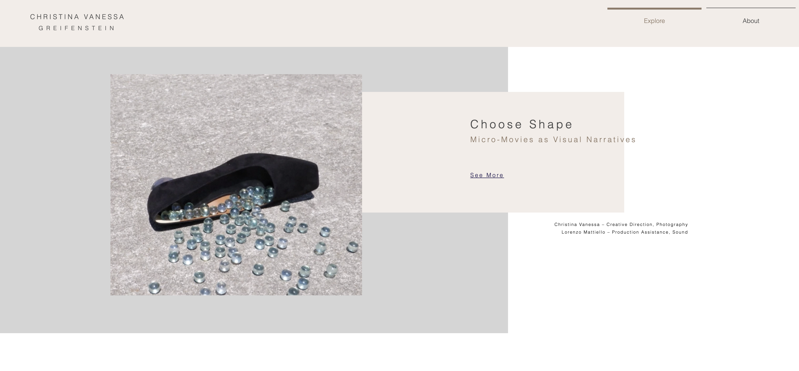
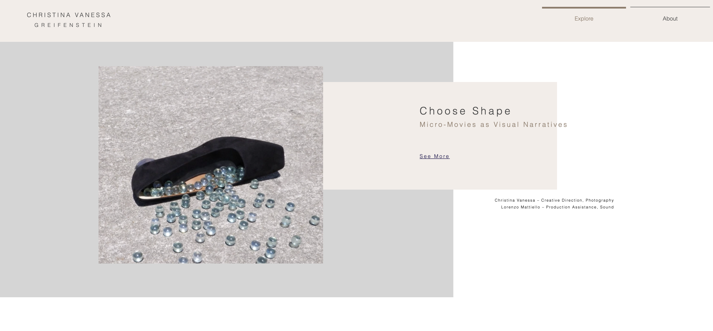
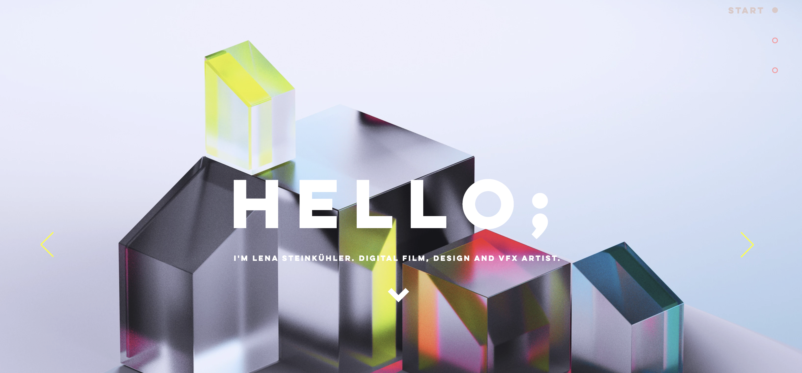

Portfolio Research
Portfolio sites display the designers work and overall style to the public. There is a slight difference between the work done by the individual and work they have done for a company. A portfolio site can be a first impression to the viewer so it is important to have a well designed site.
After looking at other professional portfolio websites some common aspects I saw was having the designers name as the first thing you saw. The main pages consisted heavily of images and graphics with not many words. Some of the common navigation features I found on portfolio sites were about, work and home. When looking I found some sites using minimal colors while others were bold and bright. There is really no way to go wrong if you are portraying yourself in the best way.
One of my favorite portfolio sites was by Christina Vanessa. Her page was very minimal and simple with coloring. Her images really had a chance to stand out on the pages because she did not include many words. Her home page was quite impressive beaceu it was the only one I saw playing a continuous video. Some pictures from her site are below:
 

Another page that I enjoyed looking at was by Lena Steinkuhler. She used a slideshow to show some of her bright visuals on the home page. She uses minimal words on the work pages mainly letting her visuals speak for themselves. Once you click on an image there is a brief description. Overall, her page was bright and energizing. I think some of the key aspects that I will include on my portfolio page is a focus on shapes and colors with images being the main focus.
